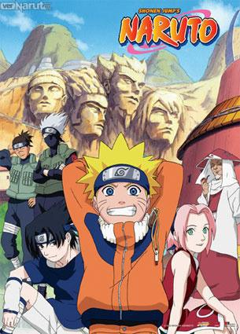
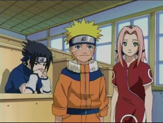
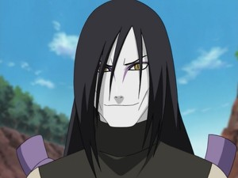
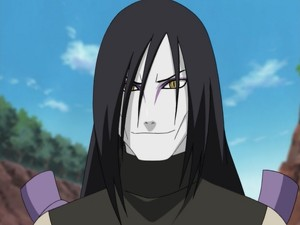
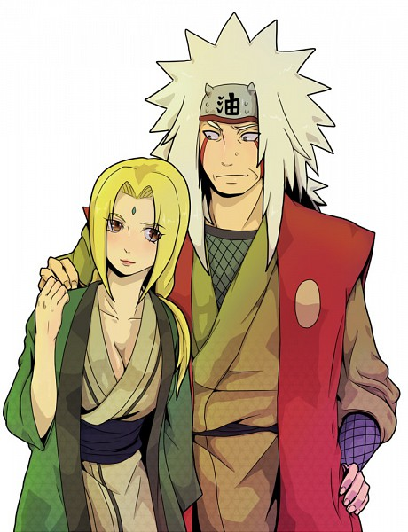
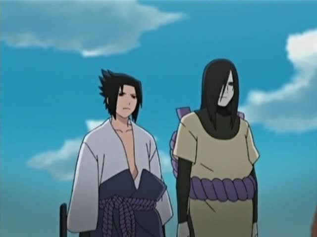
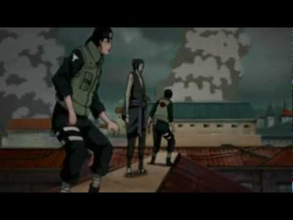

Naruto
Naruto es una serie manga creada por Masashi Kishimoto, más tarde llevada al anime, sobre un ninja adolescente llamado Naruto. El manga apareció publicado por primera vez por Shūeisha en 1999 en el número 43 de la revista Shōnen Jump en Japón, y en ella continúa su edición con un capítulo por semana, recopilados hasta ahora en 39 volúmenes. Ahora hay más lanzamientos.
El éxito del manga hizo que su trama fuera adaptada a una serie de anime originalmente transmitida por TV Tokyo que sólo empezó a ser traducida a otros idiomas cuando llevaba mucho tiempo emitiéndose en Japón. Tanto manga como anime han alcanzado una distribución notable en el extranjero previa a la exportación debido a los numerosos fansubs que los han traducido alrededor del mundo
La historia de Naruto va aumentando en complejidad, adentrándose en situaciones más maduras al avanzar la trama. En la primera parte, Naruto, el argumento se limita a plantear un poco cómo es el mundo en que se desarrolla la acción, y los temas y las situaciones son simples.
Naruto, un aprendiz de ninja de la Aldea Oculta de Konoha es un chico travieso que desea llegar a ser el Hokage de la aldea para demostrar a todos lo que vale. Lo que descubre al inicio de la historia es que la gente le mira con desconfianza porque en su interior está encerrado el demonio Kyubi que una vez destruyó la aldea, y que el anterior líder de la misma tuvo que encerrar en su cuerpo siendo aún muy pequeño, a coste de su vida. Aunque sus compañeros no saben esto, tampoco le aprecian porque es mal estudiante y siempre está haciendo bromas. Sin embargo, la forma de actuar y la determinación de Naruto demuestran a los demás que puede llegar muy lejos, y el recelo de los otros chicos se va disipando. Naruto y sus compañeros Sakura y Sasuke, junto a su maestro Kakashi tendrán que enfrentarse a una serie de combates y misiones a lo largo de la historia que les permitirán mejorar y crecer. Y no sabemos si Naruto llega a cumplir su sueño de ser Hokage.

Doce años antes del inicio de la serie, este demonio atacó a la Aldea Oculta de la Hoja, matando a muchas personas.Como consecuencia, el líder de la aldea (el Cuarto Hokage, Minato Namikaze) sacrificó su vida utilizando el Shiki Fūjin para sellarlo dentro de Naruto cuando era un recién nacido, con lo que esperaba detener la masacre.
Naruto se relaciona con Sasuke Uchiha y Sakura Haruno, con quienes conforma el «Equipo 7» junto a su sensei Kakashi Hatake.
 

Lo anterior desencadena que Jiraiya, uno de los tres legendarios ninja (伝説の三忍, Densetsu no Sannin),inicie la búsqueda de su antigua compañera de equipo, Tsunade,para designarla como la Quinta Hokage. Durante la búsqueda se revela que Orochimaru quiere encontrar a Sasuke (a quien conoce por sus técnicas de línea sucesoria y oculares),con tal de proponerle el poder que tanto anhela para matar a su hermano Itachi
Uchiha,responsable de haber disuelto a todo su clan:Sasuke acepta la proposición y se va a entrenar con él, traicionando a su aldea.Mientras tanto, Naruto decide hacer algo al respecto, por lo que decide dejar la aldea junto a Jiraiya durante dos años y medio con tal de entrenar y prepararse para la próxima vez que se encuentre con Sasuke, a quien intentará salvar.
 Al concluir el período de entrenamiento con Jiraiya, Naruto regresa a la aldea justo cuando una misteriosa organización denominada Akatsuki intenta capturar a las nueve poderosas bestias bijūs con cola incluyendo al «Zorro Demonio de Nueve Colas» que permanece sellado dentro de él,con la finalidad de crear una técnica jutsu que les permita controlar al mercado de guerras ninjas. El Equipo 7 y varios ninjas de la aldea luchan contra los miembros de Akatsuki,sumándose también a la misión que busca rescatar a su antiguo compañero Sasuke.Sin embargo, éste traiciona a Orochimaru[38] y enfrenta a Itachi a manera de venganza.Aunque Itachi muere, Sasuke escucha una revelación de parte del miembro de Akatsuki, Madara Uchiha,donde explica que Itachi tuvo la orden de eliminar a su clan de parte de los altos mandos de la aldea.Entristecido por esto, Sasuke ingresa a las fuerzas de Akatsuki con el objetivo de destruir a la aldea.
.En tanto, varios miembros de Akatsuki van capturando a los diferentes contenedores de bijūs y jinchūrikis,mientras que dos de sus integrantes, Pain y Konan, invaden y destruyen la aldea en búsqueda de Naruto.Sin embargo, Naruto vence a Pain y lo convence de dejar Akatsuki. A continuación, Pain utiliza sus últimas fuerzas para revivir a los habitantes de la Aldea de la Hoja. Inmediatamente después del ataque de Pain, el Raikage hace un llamado a las demás aldeas para discutir acerca de Sasuke, el cual atacó a la Aldea Oculta de las Nubes; ésto incita a Naruto a dirigirse hacia el País del Metal, y negociar el castigo de Sasuke. Tras esto, Madara llega a la reunión de las Cinco Grandes Naciones, explicando que su intención es obtener el poder de todos los bijūs y utilizarlos en su plan «Ojo de Luna», que consiste en crear una ilusión a nivel global, lo suficientemente poderosa como para controlar a la humanidad, a través de la Luna. Ante esto, todos los líderes de las cinco villas ninja, rehusándose a apoyarlo, se unen para confrontarlo, por ello, ocultan a los últimos dos jinchūrikis dentro de una isla secreta en el País del Rayo. Ahí, Naruto conoce a Killer Bee, un shinobi que contiene el «Hachibi (八尾, Hachibi)», dentro de él, y Naruto le pide ayuda para que lo entrene y pueda controlar de forma correcta el chakra del «Zorro Demonio de Nueve Colas».
Fuente: http://es.naruto.wikia.com/wiki/Serie_Naruto